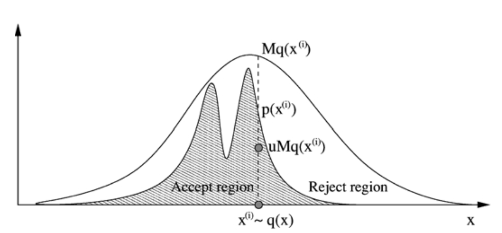

Sampling methods can be used to perform intractable integrations c e.g. normalization, marginalization, expectation.
The Monte Carlo principle
MC simulation draws an i.i.d. set of samples {x(i)}i=1N from a target density p(x) defined on a high-dimenstional space X. These N samples can be used to approximate the target density with the empirical point-mass function
p(x)≈N1i=1∑N1x(i)(x),
where 1x(i)(x) denotes indicator function at x(i).
Consequently, to approximate expectation Ex∼p[f(x)] with tractable sums IN that converge,
The estimate IN is unbiased, and by SLLN, it will almost surely (a.s.) to I(f).
If the variance of Varx∼p[f(x)]<∞, then Varxi∼i.i.d.p[IN]=N1Varx∼p[f(x)].
CLT yields convergence in distribution of the error N(IN−Ex∼p[f(x)])N→∞⟹N(0,σf2).
Standard distributions
To sample from p(x) with a closed-form inverse CDF:
Sample u∼U(0,1).
x=FX−1(u).
In the case of a multinomial distribution with k possible outcomes and associated probabilities θ1,...,θk.
Subdivide a unit interval into k regions with region i having size θi.
Sample uniformly from [0,1] and return the value of the region in which our sample falls.
Forward Sampling (aka Ancestral Sampling)
Sample from a prior
To sample from prior p(x)=∏i=1Mp(xi∣πi) of a DGM, simply sample nodes in topological order, conditioned on the sampled values of the parent nodes.
"Forward sampling" can also be performed efficiently on undirected models if the model can be represented by a clique tree with a small number of variables per node (clique).
Calibrate the clique tree, which gives us the marginal distribution over each node, and choose a node to be the root.
To sample for each node:
Marginalize over variables to get the marginal for a single variable p(x1∣e).
Sample x1∼p(x1∣e) and incorporate X1=x1 as evidence.
Proceed with sampling x2∼p(x2∣x1,e), x3∼p(x3∣x1,x2,e) and so on.
When moving down the tree to sample variables from other nodes, each node must send an updated message containing the values of the sampled variables.
Sample from a posterior
Suppose X=Z∪E. To sample from posterior p(z∣e), use forwards sampling on prior p(x) and throw away all samples that are inconsistent with e (i.e. logic sampling, which can be considered a special case of rejections sampling). Formally,
where 1e(x)={10if x is consistent with eotherwise.
Drawback: the overall probability of accepting a sample from the posterior decreases rapidly as the number of observed variables increases and as the number of states that those variables can take increases.
Rejection sampling
Suppose that:
Target distribution is p(x) hard to sample directly from.
p(x) can be evaluated up to a normalising constant i.e. unormalized potential p~(x) can be readily evaluated, but p(x)=Zp1p~(x) is not (Zp is unknown).
Proposal distribution q(x) is easy to sample from.
Choose M<∞ such that p~(x)≤Mq(x).
Rejection sampling algo
Set i=1.
Repeat until i=N:
Sample x(i)∼q(x) and u∼U(0,1).
If u<Mq(x(i))p~(x(i)) then accept x(i) and increment the counter i by 1. Otherwise, reject.

Limitations:
It is not always possible to bound p(x)/q(x) within a reasonable constant M over the whole sapce X.
If M is too large, the acceptance probability Pr(x accepted)=Pr(u<Mq(x)p~(x))≈M1 will be too small.
Importance sampling
Importance sampling takes all samples drawn from q and reweigh them with importance weights. We must assume that the support of q(x) includes the support of p(x).
Unnormalised importance sampling
When p(x) can be evaluated, we can define w(x)≜p(x)/q(x). We thus have
This lower bound can be attained by choosing optimal importance distribution
q∗(x)=∫∣f(x)∣p(x)∣f(x)∣p(x)
If we can sample from this q (and evaluate the corresponding weight), then we only need a single MC sample to compute the true value of our integral. However, sampling from such a q~(x)=∣f(x)∣p(x) is NP-hard in general. Nevertheless, this tells us that high sampling efficiency is achieved when we focus on sampling from p(x) in the important regions where ∣f(x)∣p(x) is relatively large.
Normalised importance sampling
Assume only p~(x) can be evaluated, we then define w(x)≜p~(x)/q(x). We have
where the unnormalised importance weight is w(z)≜p~e(z)/q(z)=p(z,e)/q(z).
Markov chain Monte Carlo (MCMC)
MCMC is a strategy for generating samples x(i) while exploring the state space X using a Markov chain mechanism. This mechanism is consturcted so that the chain spends more time in the most important regions, i.e. samples x(i) mimic samples drawn from target distribution p~(x).
Markov Chain on finite state spaces
Consider a discrete-time stochastic process x(i) is called a Markov chain if it satisfies the Markov assumption:
p(x(i)∣x(i−1),...,x(1))=T(x(i)∣x(i−1))
The chain is homogenous if T≜T(x(i)∣x(i−1)) remains invariant for all i, with ∑x(i)T(x(i)∣x(i−1))=1 for any i.
If the initial state x(0) is drawn from probability vector p(x(0)), we may represent the probability p(x(t)) of ending up in each state after t steps as
p(x(t))=Ttp(x(0))
The stationary distribution of the Markov chain is the limit π=limt→∞p(x(t)) if it exists.
Existence of a stationary distribution
The high-level idea of MCMC will be to construct a Markov chain whose states will be joint assignments to the variables in the model and whose stationary distribution will equal the model probability p.
Two sufficient conditions on T for finite-state Markov chain to have a stationary distribution:
Irreducibility: It is possible to get from any state x to any other state x′ with a positive probability in a finite number of steps. In other words, T cannot be reduced to separate smaller matrices annd the transition graph is connected.
Aperiodicity: The train should not be trapped in cycles. In other words, it is possible to return to any state at any time, i.e., there exists an n such that for all k and all n′≥n, p(x(n′)=k∣x(n)=k)>0.
In the case of continuuous variables, the Markov chain must be ergodic.
A sufficient (but not necessary) condition that a particular distribution p(x) is a stationary distribution is the following detailed balance (reversibility) condition:
MCMC samplers are irreducible and aperiodic Markov chains that have the target distribution as the invariant distribution. One way to design these samplers is to ensure that detailed balance is satisfied.
MCMC algorithms
At a high level, MCMC algorithms will have the following structure. They take as argument a transition operator T specifying a Markov chain whose stationary distribution is p (unnormalised), and an initial assignment x(0) to the variables of p. An MCMC algorithm then perform the following steps.
Run the Markov chain from x(0) for Bburn-in steps.
Run the Markov chain for Nsampling steps and collect all the states that it visits.
Assuming B is sufficiently large, the latter collection of states will form samples from p. We may then use these samples for Monte Carlo integration (or in importance sampling). We may also use them to:
produce Monte Carlo estimates of marginal probabilities,
perform MAP inference by take the sample with the highest probability
Metropolis-Hastings algorithm
The Metropolis-Hastings (MH) algorithm is our first way to construct Markov chains within MCMC. The MH method constructs a transition operator T from two components:
A transition kernel q(x∗∣x), that is our proposal distribution.
An acceptance probability for moving towards candidate value x∗ sampled from q(x∗∣x)
A(x∗,x)=min{1,p(x)q(x∗∣x)p(x∗)q(x∣x∗)}
Metropolis-Hasting algo
Initialise x(0).
For i=0 to N−1
Sample u∼U(0,1).
Sample x∗∼q(x∗∣x(i)).
If u<A(x∗,x(i)), assign x(i+1)=x∗; else, x(i+1)=x(i)
Notice that the acceptance probability encourages us to move towards more likely points in the distribution; when q suggests that we move into a low-probability region, we follow that move only a certain fraction of the time.
In practice, the distribution q is taken to be something simple, like a Gaussian centered at x if we are dealing with continuous variables.
Fact 1: The MH algo admits p as a stationary distribution.
This means that the MH algo will eventually produce samples from their stationary distribution, which is p by construction.
We shall prove that p satisfies the detailed balance condition w.r.t the MH Markov chain. The transition kernel for the MH algorithm is
This algo is close to importance sampling, but now the samples are correlated since they result from comparing one sample to the other.
Metropolis algorithm
The Metropolis algo assumes a symmetric random walk proposal q(x∗∣x(i))=q(x(i)∣x∗) e.g. isotropic Gaussian. The acceptance ratio simplifies to
A(x∗,x(i))=min{1,p(xi)p(x∗)}
Gibbs sampler
Suppose we have an n-dimensional vector x and the expressions for the full conditionals p(xj∣x1,...,xj−1,xj+1,...,xn)=p(xj∣x−j). Consider the following proposal
For graphical models, full conditionals reduces to conditonals on Markov blankets i.e. p(xj∣x−j)=p(xj∣MB(xj))
Monte carlo EM
Reference materials
Andrieu, C., de Freitas, N., Doucet A., Jordan, M. I. "An Introduction to MCMC for Machine Learning." Machine Learning, 50, 5-43, 2003. Accessed Nov 2, 2021. https://link.springer.com/content/pdf/10.1023/A:1020281327116.pdf.
Kuleshov, V. and Ermon, S. "Sample methods." cs228-notes. Accessed Nov 2, 2021. https://ermongroup.github.io/cs228-notes/inference/sampling/.
Owen, A. "Importance sampling." Monte Carlo theory, methods and examples. Accessed Nov 2, 2021. https://statweb.stanford.edu/~owen/mc/Ch-var-is.pdf.
Mauser, K. "Why does the Metropolis-Hastings procedure satisfy the detailed balance criterion?" Kris Hauser. Accessed Nov 2, 2021. https://people.duke.edu/~kh269/teaching/notes/MetropolisExplanation.pdf.
Bishop, C. "Sample methods." Pattern Recognition and Machine Learning.
![Reducing sampling from a multinomial distribution to sampling a uniform distribution in [0, 1]](multinomial-sampling.png)